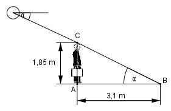

Aufgabe 77 Ein Mann ist 1,85 m groß und wirft einen Schatten von 3,1 m. Unter welchem Winkel α steht die Sonne?  Im Dreieck ABC: 1,85 m tan α = ---------- = 0,5968 --> α = 30,8° 3,1 m
Aufgabe 77 Ein Mann ist 1,85 m groß und wirft einen Schatten von 3,1 m. Unter welchem Winkel α steht die Sonne?
